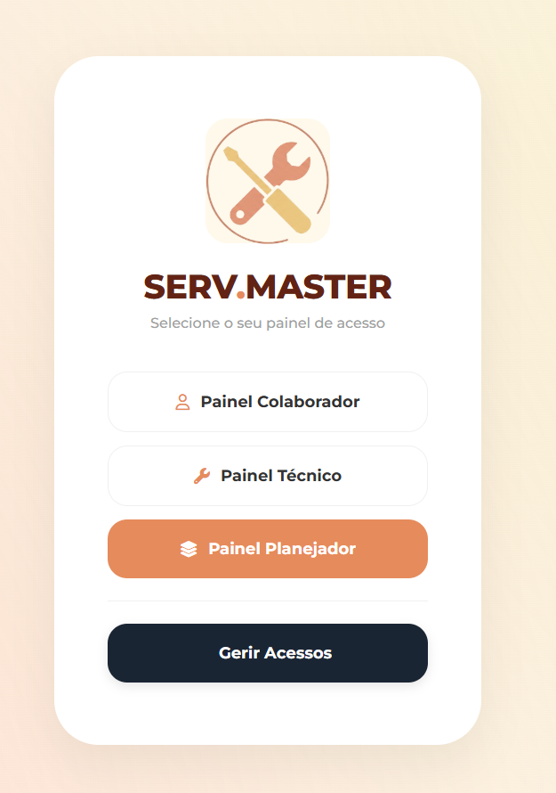
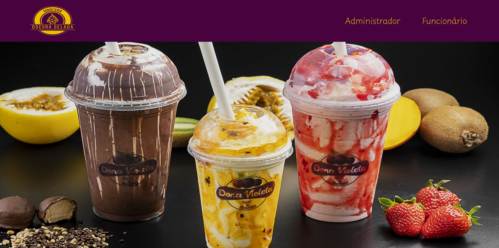
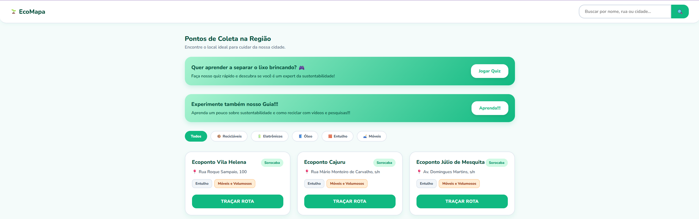

Sobre Mim
Olá! Meu nome é Aline Bianca da Silva Marques. Minha paixão é a música, os livros e os jogos de VideoGame.
OBJETIVO PROFISSIONAL
Meus futuros planos são atuar com administração e automação de processos (VBA/Excel), focando na excelência operacional e na melhoria contínua.
Experiência Profissional
Jovem Aprendiz em Administração
CBA | Jan/2025 - Jun/2026Suporte às rotinas administrativas do departamento, garantindo a padronização e organização. Controle de dados, elaboração de automações, e identificação e redução de GAPs no processo. Utilização de ferramentas de gestão como Risc, SAP e Power BI.
Formações Acadêmicas
Análise e Desenvolvimento de Sistemas
Facens | Previsão: Jun/2028Ensino Superior Tecnológico focado em desenvolvimento de software e soluções computacionais.
Técnico em Administração
SENAI | Previsão: Jun/2026Formação técnica focada em gestão e rotinas corporativas.
Técnico em Desenvolvimento de Sistemas
ETEC | ConcluídoEnsino técnico integrado ao Ensino Médio.
Projetos

ServMaster
Sistema focado na gestão de manutenção, desenvolvido para organizar demandas, facilitar o fluxo de chamados e otimizar o controle operacional através de uma interface moderna.
Acessar Site
Agenda de Controle Comercial
Projeto de TCC do curso de Análise e Desenvolvimento de Sistemas. O projeto é uma "Agenda de controle" para uma sorveteria, onde os funcionários registram os produtos vendidos e o sistema gera um relatório de renda no final do dia. Inclui também um módulo para gerenciar o cadastro de funcionários e administradores.
Acessar Site
EcoMapa
Plataforma interativa desenvolvida com HTML, CSS e JavaScript, focada em conscientização ambiental. O site ensina sobre reciclagem de forma dinâmica através de quiz interativo, textos informativos e vídeos.
Acessar Site